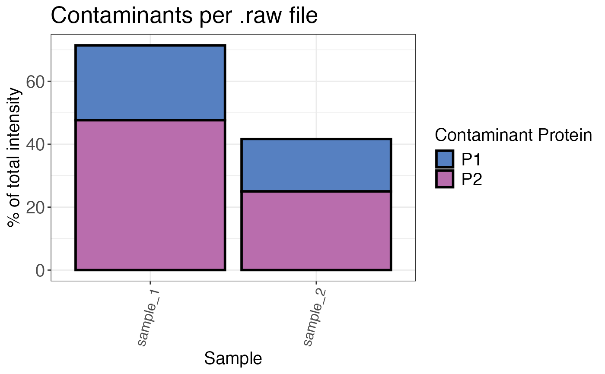

Calculates the percentage of contaminating proteins as the share of total intensity.
qc_contaminants(
data,
sample,
protein,
is_contaminant,
intensity,
n_contaminants = 5,
plot = TRUE,
interactive = FALSE
)a data frame that contains at least the input variables.
a character or factor column in the data data frame that contains the sample names.
a character column in the data data frame that contains protein IDs or
protein names.
a logical column that indicates if the protein is a contaminant.
a numeric column in the data data frame that contains the corresponding
raw or normalised intensity values (not log2).
a numeric value that indicates how many contaminants should be displayed individually. The rest is combined to a group called "other". The default is 5.
a logical value that indicates if a plot is returned. If FALSE a table is returned.
a logical value that indicates if the plot is made interactive using the r
package plotly.
A bar plot that displays the percentage of contaminating proteins over all samples.
If plot = FALSE a data frame is returned.
data <- data.frame(
sample = c(rep("sample_1", 10), rep("sample_2", 10)),
leading_razor_protein = c(rep(c("P1", "P1", "P1", "P2", "P2", "P2", "P2", "P3", "P3", "P3"), 2)),
potential_contaminant = c(rep(c(rep(TRUE, 7), rep(FALSE, 3)), 2)),
intensity = c(rep(1, 2), rep(4, 4), rep(6, 4), rep(2, 3), rep(3, 5), rep(4, 2))
)
qc_contaminants(
data,
sample = sample,
protein = leading_razor_protein,
is_contaminant = potential_contaminant,
intensity = intensity
)
